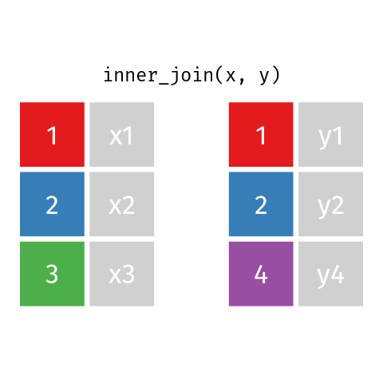
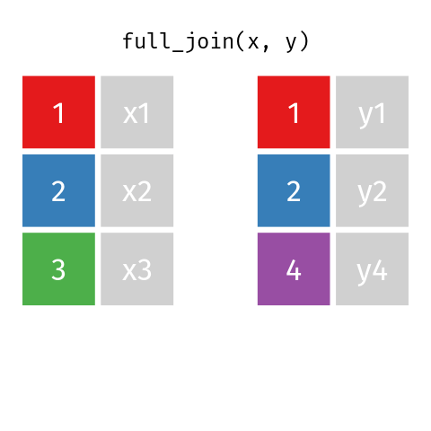

Chapitre 3 Organisation des données et opérations sur les tableaux
️ Objectifs spécifiques:
À la fin de ce chapitre,
vous comprendrez les règles guidant la création et la gestion des tableaux,
vous saurez importer et exporter des données dans R,
vous saurez effectuer des opérations en cascade avec le module tidyverse comme des filtres sur les lignes, des sélections de colonnes, des sommaires statistiques et des jointures entre tableaux.
Les données sont utilisées à chaque étape dans les flux de travail en sciences. Elles alimentent l’analyse et la modélisation. Les résultats qui en découlent sont aussi des données qui peuvent alimenter des travaux subséquents. Une bonne organisation des données facilite le flux de travail.
Dicton. Proportions de temps voué aux calcul scientifique: 80% de nettoyage de données mal organisées, 20% de calcul.
Qu’est-ce qu’une donnée ?
De manière abstraite, il s’agit d’une valeur associée à une variable. Une variable peut être une dimension, une date, une couleur, le résultat d’un test statistique, à laquelle on attribue la valeur quantitative ou qualitative d’un chiffre, d’une chaîne de caractère, d’un symbole conventionné, etc.
Par exemple, lorsque vous commandez un café latté au lait végane, latté est la valeur que vous attribuez à la variable type de café, et végane est la valeur de la variable type de lait.
L’exemple est peut-être horrible… peut-être besoin d’un café … 😉.

Ce chapitre traite de l’importation, l’utilisation et l’exportation de données structurées, en R, sous forme de vecteurs, de matrices, de tableaux ou d’ensemble de tableaux (bases de données).
Bien qu’il soit toujours préférable d’organiser les structures qui accueilleront les données d’une expérience avant-même de procéder à la collecte de données, l’analyste doit s’attendre à réorganiser ses données en cours de route. Or, des données bien organisées au départ faciliteront aussi leur réorganisation. Rappelez-vous le dicton ci-haut.
Le chapitre débute avec quelques définitions : les données, les matrices, les tableaux et les bases de données, ainsi que leur signification en R.
Puis nous verrons comment organiser un tableau selon quelques règles simples, mais importantes pour éviter les erreurs et les opérations fastidieuses pour reconstruire un tableau mal conçu.
Ensuite, nous traiterons des formats de tableau courant, pour enfin passer à l’utilisation de dplyr, le module tidyverse pour effectuer des opérations sur les tableaux.
3.1 Les collections de données
Dans le chapitre 2, nous avons survolé différents types d’objets :
- réels,
- entiers,
- chaînes de caractères
- et booléens.
Les données peuvent appartenir à d’autres types : - dates, - catégories ordinales (ordonnées : faible, moyen, élevé) - et catégories nominales (non ordonnées : espèces, cultivars, couleurs, unité pédologique, etc.).
Comme mentionné en début de chapitre, une donnée est une valeur associée à une variable. Les données peuvent être organisées en collections.
Nous avons aussi vu au chapitre 2 que la manière privilégiée d’organiser des données était sous forme de tableau. De manière générale, un tableau de données est une organisation de données en deux dimensions, comportant des lignes et des colonnes. Il est préférable de respecter la convention selon laquelle les lignes sont des observations et les colonnes sont des variables. Ainsi, un tableau est une collection de vecteurs de même longueur, chaque vecteur représentant une variable. Chaque variable est libre de prendre le type de données approprié. La position d’une donnée dans le vecteur correspond à une observation.
Imaginez que vous consignez des données de différents sites (A, B et C), et que chaque site possède ses propres caractéristiques. Il est redondant de décrire le site pour chaque observation. Vous préférerez créer deux tableaux : un pour décrire vos observations, et un autre pour décrire les sites. De cette manière, vous créez une collection de tableaux intereliés : une base de données. R peut soutirer des données des bases de données grâce au module DBI, qui n’est pas couvert à ce stade de développement du cours.
Dans R, les données structurées en tableaux, ainsi que les opérations sur les tableaux, peuvent être gérés grâce aux modules readr, dplyr et tidyr, tous des modules faisant partie du méta-module tidyverse, devenu incontoutnable. Mais avant de se lancer dans l’utilisation de ces modules, voyons quelques règles à suivre pour bien structurer ses données en format tidy, un jargon du tidyverse qui signifie proprement organisé.
3.2 Organiser un tableau de données
Afin de repérer chaque cellule d’un tableau, on attribue à chaque lignes et à chaque colonne un identifiant unique, que l’on nomme indice pour les lignes et entête pour les colonnes.
Règle no 1. Une variable par colonne, une observation par ligne, une valeur par cellule.
Les unités expérimentales sont décrites par une ou plusieurs variables par des chiffres ou des lettres. Chaque variable devrait être présente en une seule colonne, et chaque ligne devrait correspondre à une unité expérimentale où ces variables ont été mesurées. La règle parait simple, mais elle est rarement respectée. Prenez par exemple le tableau suivant.
| Site | Traitement A | Traitement B | Traitement C |
|---|---|---|---|
| Sainte-Souris | 4.1 | 8.2 | 6.8 |
| Sainte-Fourmi | 5.8 | 5.9 | NA |
| Saint-Ours | 2.9 | 3.4 | 4.6 |
Tableau 1. Rendements obtenus sur les sites expérimentaux selon les traitements.
Qu’est-ce qui cloche avec ce tableau ? Chaque ligne est une observation, mais contient plusieurs observations d’une même variable, le rendement, qui devient étalé sur plusieurs colonnes. À bien y penser, le type de traitement est une variable et le rendement en est une autre :
| Site | Traitement | Rendement |
|---|---|---|
| Sainte-Souris | A | 4.1 |
| Sainte-Souris | B | 8.2 |
| Sainte-Souris | C | 6.8 |
| Sainte-Fourmi | A | 5.8 |
| Sainte-Fourmi | B | 5.9 |
| Sainte-Fourmi | C | NA |
| Saint-Ours | A | 2.9 |
| Saint-Ours | B | 3.4 |
| Saint-Ours | C | 4.6 |
Tableau 2. Rendements obtenus sur les sites expérimentaux selon les traitements.
Plus précisément, l’expression à bien y penser suggère une réflexion sur la signification des données. Certaines variables peuvent parfois être intégrées dans une même colonne, parfois pas.
Par exemple, les concentrations en
cuivre,zincetplombdans un sol contaminé peuvent être placés dans la même colonne “Concentration” ou déclinées en plusieurs colonnesCu,ZnetPb.
La première version trouvera son utilité pour créer des graphiques …..(chapitre 3)….., alors que la deuxième favorise le traitement statistique …..(chapitre 5)….. Il est possible de passer d’un format à l’autre grâce aux fonctions gather() et spread() du module tidyr.
Règle no 2. Un tableau par unité observationnelle : ne pas répéter les informations.
Reprenons la même expérience. Supposons que vous mesurez la précipitation (mm) à l’échelle du site.
| Site | Traitement | Rendement | Précipitations |
|---|---|---|---|
| Sainte-Souris | A | 4.1 | 813 |
| Sainte-Souris | B | 8.2 | 813 |
| Sainte-Souris | C | 6.8 | 813 |
| Sainte-Fourmi | A | 5.8 | 642 |
| Sainte-Fourmi | B | 5.9 | 642 |
| Sainte-Fourmi | C | NA | 642 |
| Saint-Ours | A | 2.9 | 1028 |
| Saint-Ours | B | 3.4 | 1028 |
| Saint-Ours | C | 4.6 | 1028 |
Tableau 3. Rendements obtenus sur les sites expérimentaux selon les traitements.
Segmenter l’information en deux tableaux serait préférable.
| Site | Précipitations |
|---|---|
| Sainte-Souris | 813 |
| Sainte-Fourmi | 642 |
| Saint-Ours | 1028 |
Tableau 4. Précipitations sur les sites expérimentaux.
Les tableaux 2 et 4, ensemble, forment une base de données (collection organisée de tableaux). Les opérations de fusion entre les tableaux peuvent être effectuées grâce aux fonctions de jointure (left_join(), par exemple) du module tidyr.
Règle no 3. Ne pas bousiller les données.
Par exemple.
Ajouter des commentaires dans des cellules. Si une cellule mérite d’être commentée, il est préférable de placer les commentaires soit dans un fichier décrivant le tableau de données, soit dans une colonne de commentaire juxtaposée à la colonne de la variable à commenter. Par exemple, si vous n’avez pas mesuré le pH pour une observation, n’écrivez pas “échantillon contaminé” dans la cellule, mais annoter dans un fichier d’explication que l’échantillon N° X a été contaminé. Si les commentaires sont systématiques, il peut être pratique de les inscrire dans une colonne
commentaire_pH.Inscription non systématiques. Il arrive souvent que des catégories d’une variable ou que des valeurs manquantes soient annotées différemment. Il arrive même que le séparateur décimal soit non systématique, parfois noté par un point, parfois par une virgule. Par exemple, une fois importés dans votre session, les catégories
St-OursetSaint-Oursseront traitées comme deux catégories distinctes. De même, les cellules correspondant à des valeurs manquantes ne devraient pas être inscrite parfois avec une cellule vide, parfois avec un point, parfois avec un tiret ou avec la mentionNA. Le plus simple est de laisser systématiquement ces cellules vides.Inclure des notes dans un tableau. La règle “une colonne, une variable” n’est pas respectée si on ajoute des notes un peu n’importe où sous ou à côté du tableau.
Ajouter des sommaires. Si vous ajoutez une ligne sous un tableau comprenant la moyenne de chaque colonne, qu’est-ce qui arrivera lorsque vous importerez votre tableau dans votre session de travail ? La ligne sera considérée comme une observation supplémentaire.
Inclure une hiérarchie dans le entêtes. Afin de consigner des données de texture du sol, comprenant la proportion de sable, de limon et d’argile, vous organisez votre entête en plusieurs lignes. Une ligne pour la catégorie de donnée, Texture, fusionnée sur trois colonnes, puis trois colonnes intitulées Sable, Limon et Argile. Votre tableau est joli, mais il ne pourra pas être importé conformément dans votre session de calcul : on recherche une entête unique par colonne. Votre tableau de données devrait plutôt porter les entêtes Texture sable, Texture limon et Texture argile. Un conseil : réserver le travail esthétique à la toute fin d’un flux de travail.
3.3 Formats de tableau
Plusieurs outils sont à votre disposition pour créer des tableaux. Je vous présente ici les plus communs.
3.3.1 xls ou xlsx
Microsoft Excel est un logiciel de type tableur, ou chiffrier électronique. L’ancien format xls a été remplacé par le format xlsx avec l’arrivée de Microsoft Office 2010. Il s’agit d’un format propriétaire, dont l’alternative libre la plus connue est le format ods, popularisé par la suite bureautique LibreOffice. Les formats xls, xlsx ou ods sont davantage utilisés comme outils de calcul que d’entreposage de données. Ils contiennent des formules, des graphiques, du formatage de cellule, etc. Je ne les recommande pas pour stocker des données.
3.3.2 csv
Le format csv, pour comma separated values, est un fichier texte, que vous pouvez ouvrir avec n’importe quel éditeur de texte brut (Bloc note, Atom, Notepad++, etc.). Chaque colonne doit être délimitée par un caractère cohérent (conventionnellement une virgule, mais en français un point-virgule ou une tabulation pour éviter la confusion avec le séparateur décimal) et chaque ligne du tableau est un retour de ligne. Il est possible d’ouvrir et d’éditer les fichiers .csv dans un éditeur de texte, mais il est plus pratique de les ouvrir avec des tableurs (LibreOffice Calc, Microsoft Excel, Google Sheets, etc.).
Encodage des fichiers texte. Puisque le format csv est un fichier texte, un souci particulier doit être porté sur la manière dont le texte est encodé. Les caractères accentués pourrait être importés incorrectement si vous importez votre tableau en spécifiant le mauvais encodage. Pour les fichiers en langues occidentales, l’encodage UTF-8 devrait être utilisé. Toutefois, par défaut, Excel utilise un encodage de Microsoft. Si le csv a été généré par Excel, il est préférable de l’ouvrir avec votre éditeur de texte et de l’enregistrer dans l’encodage UTF-8.
3.3.3 json
Comme le format csv, le format json indique un fichier en texte clair. Il est utilisé davantage pour le partage de données des applications web. En analyse et modélisation, ce format est surtout utilisé pour les données géoréférencées. L’encodage est géré de la même manière qu’un fichier csv.
3.3.4 SQLite
SQLite est une application pour les bases de données relationnelles de type SQL qui n’a pas besoin de serveur pour fonctionner. Les bases de données SQLite sont encodées dans des fichiers portant l’extension .db, qui peuvent être facilement partagés.
3.3.5 Suggestion
En csv pour les petits tableaux, en sqlite pour les bases de données plus complexes. Ce cours se concentre toutefois sur les données de type csv.
3.4 Entreposer ses données
La manière la plus sécurisée pour entreposer ses données est de les confiner dans une base de données sécurisée sur un serveur sécurisé dans un environnement sécurisé et d’encrypter les communications. C’est aussi la manière la moins accessible. Des espaces de stockage nuagiques, comme Dropbox ou d’autres options similaires, peuvent être pratiques pour les backups et le partage des données avec une équipe de travail (qui risque en retour de bousiller vos données).
Le suivi de version est possible chez certains fournisseurs d’espace de stockage. Mais pour un suivi de version plus rigoureux, les espaces de développement (comme GitHub et GitLab) sont plus appropriés (couverts au chapitre ??).
Dans tous les cas, il est important de garder (1) des copies anciennes pour y revenir en cas d’erreurs et (2) un petit fichier décrivant les changements effectués sur les données.
3.5 Manipuler des données en mode tidyverse
Le méta-module tidyverse regroupe une collection de précieux modules pour l’analyse de données en R. Il permet :
d’importer des données dans votre session de travail avec
readr,de les explorer avec le module de visualisation
ggplot2,de les transformer avec
tidyretdplyret de les exporter avec
readr.
Les tableaux de classe data.frame, comme ceux de la plus moderne classe tibble, peuvent être manipulés à travers le flux de travail pour l’analyse et la modélisation (chapitres suivants).
Ce chapitre est loin de couvrir les nombreuses fonctionnalités qui sont offertes dans le tidyverse.
3.5.1 Importer les données dans la session de travail
Supposons que vous avez bien organisé vos données en mode tidy. Pour les importer dans votre session et commencer à les inspecter, vous lancerez une des commandes du module readr, décrites dans la documentation dédiée.
read_csv()si le séparateur de colonne est une virguleread_csv2()si le séparateur de colonne est un point-virgule et que le séparateur décimal est une virguleread_tsv()si le séparateur de colonne est une tabulationread_table()si le séparateur de colonne est un espace blancread_delim()si le séparateur de colonne est un autre caractère (comme le point-virgule) que vous spécifierez dans l’argument **delim = ";"**.
Les principaux arguments sont les suivants :
file: le chemin vers le fichier. Ce chemin peut aussi bien être une adresse locale (data/...) qu’une adresse internet (https://...).
delim: le symbole délimitant les colonnes dans le cas deread_delim.
col_names: si= TRUE, la première ligne est l’entête du tableau, sinon= FALSE. Si vous spécifiez un vecteur numérique, ce sont les numéros des lignes utilisées pour le nom de l’entête. Si vous utilisez un vecteur de caractères, ce sont les noms des colonnes que vous désirez donner à votre tableau.na: le symbole spécifiant une valeur manquante. L’argumentna = ''signifie que les cellules vides sont des données manquantes. Si les valeurs manquantes ne sont pas uniformes, vous pouvez les indiquer dans un vecteur, par exemplena = c("", "NA", "NaN", ".", "-").local: cet argument prend une fonctionlocal()qui peut inclure des arguments de format de temps, mais aussi d’encodage (voir documentation)
D’autres arguments peuvent être spécifiés au besoin, et les répéter ici dupliquerait l’information de la documentation de la fonction read_csv() de readr.
Je déconseille d’importer des données en format xls ou xlsx. Si toutefois cela vous convient, je vous réfère au module readxl.
L’aide-mémoire de readr est à afficher près de soi.
 Aide-mémoire de readr, source: https://www.rstudio.com/resources/cheatsheets/
Aide-mémoire de readr, source: https://www.rstudio.com/resources/cheatsheets/
Nous allons charger des données de culture de la chicouté (Rubus chamaemorus), un petit fruit nordique, tiré de Parent et al. (2013). Ouvrons d’abord le fichier pour vérifier les séparateurs de colonne et de décimale.

Le séparateur de colonne est un point-virgule et le décimal est une virgule.
Avec Atom, mon éditeur de texte préféré, je vais dans Edit > Select Encoding et j’obtiens bien le UTF-8.

Nous allons donc utiliser read_csv2() avec ses arguments par défaut.
## -- Attaching packages --------------------------------------- tidyverse 1.3.0 --## v ggplot2 3.3.2 v purrr 0.3.4
## v tibble 3.0.3 v dplyr 1.0.0
## v tidyr 1.1.0 v stringr 1.4.0
## v readr 1.3.1 v forcats 0.5.0## -- Conflicts ------------------------------------------ tidyverse_conflicts() --
## x dplyr::filter() masks stats::filter()
## x dplyr::lag() masks stats::lag()## Using ',' as decimal and '.' as grouping mark. Use read_delim() for more control.## Parsed with column specification:
## cols(
## .default = col_double(),
## CodeTourbiere = col_character(),
## Ordre = col_character(),
## Traitement = col_character(),
## DemiParcelle = col_character(),
## SousTraitement = col_character()
## )## See spec(...) for full column specifications.Quelques commandes utiles pour inspecter le tableau :
head()présente l’entête du tableau, soit ses 6 premières lignes.
str()etglimpse()présentent les variables du tableau et leur type -glimpse()est la fonction tidyverse etstr()est la fonction classique (je préfèrestr()).
summary()présente des statistiques de base du tableau.
names()oucolnames()sort les noms des colonnes sous forme d’un vecteur.
dim()donne les dimensions du tableau,ncol()son nombre de colonnes etnrow()son nombre de lignes.
skim()est une fonction du moduleskimrmontrant un portrait graphique et numérique du tableau.
Extra 1. Plusieurs modules ne se trouvent pas dans les dépôt CRAN, mais sont disponibles sur GitHub. Pour les installer, installez d’abord le module devtools disponible sur CRAN. Vous pourrez alors installer les packages de GitHub comme on le fait avec le package skimr.
Extra 2. Lorsque je désire utiliser une fonction, mais sans charger le module dans la session, j’utilise la notation module::fonction. Comme dans ce cas, pour skimr.
Exercice. Inspectez le tableau chicoute.
3.5.3 Le format long et le format large
Dans le tableau chicoute, chaque élément possède sa propre colonne. Si l’on voulait mettre en graphique les boxplot des facettes de concentrations d’azote, de phosphore et de potassium dans les différentes tourbières, il faudrait obtenir une seule colonne de concentrations.
Pour ce faire, nous utiliserons la fonction gather() :
son premier argument
keyindique le nom de la colonne des variables,le deuxième argument
valueindique le nom de la nouvelle colonne des valeurs.La suite consiste à décrire les colonnes à inclure ou à exclure. Dans le cas qui suit,
j’exclue
CodeTourbierede la refonte j’utilisesample_n()pour présenter un échantillon du résultat.Notez la ligne comprenant la fonction
mutate(), que l’on verra plus loin. Cette fonction ajoute une colonne au tableau. Dans ce cas-ci, j’ajoute une autre colonneIDconstituée d’une séquence de nombres allant de 1 au nombre de lignes du tableau (il y en a 90). Cet identifiant unique pour chanque ligne permettra de reconstituer par la suite le tableau initial.
chicoute_long <- chicoute %>%
select(CodeTourbiere, N_pourc, P_pourc, K_pourc) %>%
mutate(ID = 1:nrow(.)) %>% # mutate ajoute une colonne (ici ID) au tableau
gather(key = element, value = concentration, -CodeTourbiere, -ID)
chicoute_long %>% sample_n(10)## # A tibble: 10 x 4
## CodeTourbiere ID element concentration
## <chr> <int> <chr> <dbl>
## 1 1 80 P_pourc 0.150
## 2 1 79 K_pourc 0.819
## 3 NBM 47 P_pourc 0.116
## 4 NBM 46 P_pourc 0.105
## 5 WTP 88 P_pourc 0.0756
## 6 MR 38 K_pourc 0.906
## 7 1 74 P_pourc 0.152
## 8 1 85 P_pourc 0.141
## 9 BEAU 2 N_pourc 2.18
## 10 2 22 N_pourc 2.92L’opération inverse est spread().
chicoute_large <- chicoute_long %>%
spread(key = "element", value = "concentration") %>%
select(-ID) # enlever l'identifiant unique
chicoute_large %>% sample_n(10)## # A tibble: 10 x 4
## CodeTourbiere K_pourc N_pourc P_pourc
## <chr> <dbl> <dbl> <dbl>
## 1 1 0.713 2.06 0.141
## 2 2 0.858 2.70 0.163
## 3 MB 0.740 2.07 0.128
## 4 2 1.34 2.59 0.158
## 5 2 1.33 3.10 0.207
## 6 SSP 0.767 1.85 0.130
## 7 NTP 0.398 2.05 0.104
## 8 1 1.16 1.98 0.141
## 9 SSP 0.659 1.66 0.128
## 10 BS2 1.07 2.44 0.09113.5.4 Combiner des tableaux
Nous avons introduit plus haut la notion de base de données. Nous voudrions peut-être utiliser le code des tourbières pour inclure leur nom, le type d’essai mené à ces tourbières, etc. Importons d’abord le tableau des noms liés aux codes.
## Using ',' as decimal and '.' as grouping mark. Use read_delim() for more control.## Parsed with column specification:
## cols(
## Tourbiere = col_character(),
## CodeTourbiere = col_character(),
## Type = col_character(),
## TypeCulture = col_character()
## )## # A tibble: 11 x 4
## Tourbiere CodeTourbiere Type TypeCulture
## <chr> <chr> <chr> <chr>
## 1 Beaulieu BEAU calibration naturel
## 2 Brador Path BP calibration naturel
## 3 Lichen (BS2E) 2 validation cultive sec
## 4 Mannys Brook MB calibration naturel
## 5 Middle Bay Road MR calibration naturel
## 6 North Est of Smelt Pond NESP calibration naturel
## 7 North of Blue Moon NBM calibration naturel
## 8 South of Smelt Pond SSP calibration naturel
## 9 Sphaigne (BS2F) BS2 validation cultive sec
## 10 Sphaigne (BS2F) 1 calibration naturel
## 11 West of Trout Pond WTP calibration naturelNotre information est organisée en deux tableaux, liés par la colonne CodeTourbiere. Comment fusionner l’information pour qu’elle puisse être utilisée dans son ensemble ? La fonction left_join() effectue cette opération typique avec les bases de données.
chicoute_merge <- left_join(x = chicoute, y = tourbieres, by = "CodeTourbiere")
# ou bien chicoute %>% left_join(y = tourbieres, by = "CodeTourbiere")
chicoute_merge %>% sample_n(4)## # A tibble: 4 x 34
## ID CodeTourbiere Ordre Site Traitement DemiParcelle SousTraitement
## <dbl> <chr> <chr> <dbl> <chr> <chr> <chr>
## 1 34 MB C 4 <NA> <NA> <NA>
## 2 40 MR I 5 <NA> <NA> <NA>
## 3 69 1 1 2 temoin right Cu
## 4 18 2 7 14 temoin right Control
## # ... with 27 more variables: Latitude_m <dbl>, Longitude_m <dbl>,
## # Rendement_g_5m2 <dbl>, TotalRamet_nombre_m2 <dbl>,
## # TotalVegetatif_nombre_m2 <dbl>, TotalFloral_nombre_m2 <dbl>,
## # TotalMale_nombre_m2 <dbl>, TotalFemelle_nombre_m2 <dbl>,
## # FemelleFruit_nombre_m2 <dbl>, FemelleAvorte_nombre_m2 <dbl>,
## # SterileFleur_nombre_m2 <dbl>, C_pourc <dbl>, N_pourc <dbl>, P_pourc <dbl>,
## # K_pourc <dbl>, Ca_pourc <dbl>, Mg_pourc <dbl>, S_pourc <dbl>,
## # B_pourc <dbl>, Cu_pourc <dbl>, Zn_pourc <dbl>, Mn_pourc <dbl>,
## # Fe_pourc <dbl>, Al_pourc <dbl>, Tourbiere <chr>, Type <chr>,
## # TypeCulture <chr>D’autres types de jointures sont possibles, et décrites en détails dans cette documentation.
Garrick Aden-Buie a préparé de jolies animations pour décrire les différents types de jointures.
left_join(x, y)colle y à x seulement ce qui dans y correspond à ce que l’on trouve dans x.
right_join(x, y)colle y à x seulement ce qui dans x correspond à ce que l’on trouve dans y.

-inner_join(x, y) colle x et y en excluant les lignes où au moins une variable de joint est absente dans x et y.

full_join(x, y)garde toutes les lignes et les colonnes de x et y.

3.5.5 Opérations sur les tableaux
Les tableaux peuvent être segmentés en éléments sur lesquels on calculera ce qui nous chante.
On pourrait vouloir obtenir :
la somme avec la function
sum(),la moyenne avec la function
mean()ou la médiane avec la fonctionmedian(),l’écart-type avec la function
sd(),les maximum et minimum avec les fonctions
min()etmax(),un décompte d’occurrence avec la fonction
n()oucount(),etc.
Par exemple,
## [1] 13.32851En mode classique, pour effectuer des opérations sur des tableaux, on utilisera la fonction apply(). Cette fonction prend, comme arguments :
- le tableau,
- l’axe (opération par ligne = 1, opération par colonne = 2),
- puis la fonction à appliquer.
## C_pourc N_pourc P_pourc K_pourc Ca_pourc Mg_pourc
## 5.027911e+01 2.199411e+00 1.388959e-01 8.887000e-01 3.884391e-01 4.980142e-01
## S_pourc B_pourc Cu_pourc Zn_pourc Mn_pourc Fe_pourc
## 1.347177e-01 3.090922e-03 4.089891e-04 6.662155e-03 3.345239e-02 1.514885e-02
## Al_pourc
## 2.694979e-03Les opération peuvent aussi être effectuées par ligne, par exemple une somme (je garde seulement les 10 premiers résultats).
## [1] 55.64299 55.76767 54.78856 55.84453 57.89671 55.53603 55.62526 55.10991
## [9] 55.06295 55.16774La fonction à appliquer peut être personnalisée, par exemple :
## C_pourc N_pourc P_pourc K_pourc Ca_pourc Mg_pourc
## 50.253429104 2.165246915 0.133754530 0.846193827 0.376192724 0.491763884
## S_pourc B_pourc Cu_pourc Zn_pourc Mn_pourc Fe_pourc
## 0.129900753 0.003014675 0.000000000 0.006408775 0.024140327 0.014351745
## Al_pourc
## 0.002450982Vous reconnaissez cette fonction ? C’était la moyenne géométrique (la fonction prod() étant le produit d’un vecteur).
En mode tidyverse, on aura besoin principalement des fonction suivantes :
group_by()pour effectuer des opérations par groupe, l’opérationgroup_by()sépare le tableau en plusieurs petits tableaux, en attendant de les recombiner. C’est un peu l’équivalent des facettes avec le module de visualisationggplot2, que nous explorons au chapitre ??.summarise()pour réduire plusieurs valeurs en une seule, il applique un calcul sur le tableau ou s’il y a lieu sur chaque petit tableau segmenté. Il en existe quelques variantes :summarise_all()applique la fonction à toutes les colonnes.summarise_at()applique la fonction aux colonnes spécifiées.summarise_if()applique la fonction aux colonnes qui ressortent commeTRUEselon une opération booléenne.mutate()pour ajouter une nouvelle colonne.Si l’on désire ajouter une colonne à un tableau, par exemple le sommaire calculé avec
summarise(). À l’inverse, la fonctiontransmute()retournera seulement le résultat, sans le tableau à partir duquel il a été calculé.
De même que summarise(), mutate() et transmute() possèdent leurs équivalents _all(), _at() et _if().
arrange()pour réordonner le tableau- On a déjà couvert
arrange()dans le chapitre 3. Rappelons que cette fonction n’est pas une opération sur un tableau, mais plutôt un changement d’affichage en changeant l’ordre d’apparition des données.
Ces opérations sont décrites dans l’aide-mémoire Data Transformation Cheat Sheet.

Aide-mémoire de dplyr, source: https://www.rstudio.com/resources/cheatsheets/
Pour effectuer des statistiques par colonne, on utilisera summarise pour des statistiques effectuées sur une seule colonne. summarise peut prendre le nombre désiré de statistiques dont la sortie est un scalaire.
chicoute %>%
summarise(moyenne = mean(TotalFloral_nombre_m2, na.rm = TRUE),
ecart_type = sd(TotalFloral_nombre_m2, na.rm = TRUE))## # A tibble: 1 x 2
## moyenne ecart_type
## <dbl> <dbl>
## 1 52.1 40.4Si l’on désire un sommaire sur toutes les variables sélectionnées, on utilisera summarise_all(). Pour spécifier que l’on désire la moyenne et l’écart-type on inscrit les noms des fonctions dans funs().
## Warning: `funs()` is deprecated as of dplyr 0.8.0.
## Please use a list of either functions or lambdas:
##
## # Simple named list:
## list(mean = mean, median = median)
##
## # Auto named with `tibble::lst()`:
## tibble::lst(mean, median)
##
## # Using lambdas
## list(~ mean(., trim = .2), ~ median(., na.rm = TRUE))
## This warning is displayed once every 8 hours.
## Call `lifecycle::last_warnings()` to see where this warning was generated.## # A tibble: 1 x 26
## C_pourc_mean N_pourc_mean P_pourc_mean K_pourc_mean Ca_pourc_mean
## <dbl> <dbl> <dbl> <dbl> <dbl>
## 1 50.3 2.20 0.139 0.889 0.388
## # ... with 21 more variables: Mg_pourc_mean <dbl>, S_pourc_mean <dbl>,
## # B_pourc_mean <dbl>, Cu_pourc_mean <dbl>, Zn_pourc_mean <dbl>,
## # Mn_pourc_mean <dbl>, Fe_pourc_mean <dbl>, Al_pourc_mean <dbl>,
## # C_pourc_sd <dbl>, N_pourc_sd <dbl>, P_pourc_sd <dbl>, K_pourc_sd <dbl>,
## # Ca_pourc_sd <dbl>, Mg_pourc_sd <dbl>, S_pourc_sd <dbl>, B_pourc_sd <dbl>,
## # Cu_pourc_sd <dbl>, Zn_pourc_sd <dbl>, Mn_pourc_sd <dbl>, Fe_pourc_sd <dbl>,
## # Al_pourc_sd <dbl>On utilisera group_by() pour segmenter le tableau, et ainsi obtenir des statistiques pour chaque groupe.
chicoute %>%
group_by(CodeTourbiere) %>%
summarise(moyenne = mean(TotalFloral_nombre_m2, na.rm = TRUE),
ecart_type = sd(TotalFloral_nombre_m2, na.rm = TRUE))## `summarise()` ungrouping output (override with `.groups` argument)## # A tibble: 12 x 3
## CodeTourbiere moyenne ecart_type
## <chr> <dbl> <dbl>
## 1 1 72.1 32.7
## 2 2 37.1 32.9
## 3 BEAU 149. 53.2
## 4 BP 60.4 30.6
## 5 BS2 27.2 15.5
## 6 MB 64.7 40.8
## 7 MR 35.1 10.5
## 8 NBM 35.1 16.6
## 9 NESP 21.4 4.88
## 10 NTP 47.6 15.9
## 11 SSP 25.7 11.1
## 12 WTP 50.2 28.3Dans le cas de summarise_all, les résultats s’affichent de la même manière.
chicoute %>%
group_by(CodeTourbiere) %>%
select(N_pourc, P_pourc, K_pourc) %>%
summarise_all(funs(mean, sd))## Adding missing grouping variables: `CodeTourbiere`## # A tibble: 12 x 7
## CodeTourbiere N_pourc_mean P_pourc_mean K_pourc_mean N_pourc_sd P_pourc_sd
## <chr> <dbl> <dbl> <dbl> <dbl> <dbl>
## 1 1 2.26 0.156 0.880 0.250 0.0193
## 2 2 2.76 0.181 1.12 0.178 0.0283
## 3 BEAU 2.00 0.0967 1.12 0.179 0.0172
## 4 BP 2.05 0.158 0.747 0.161 0.00625
## 5 BS2 2.08 0.103 1.12 0.420 0.0218
## 6 MB 2.15 0.109 0.675 0.114 0.0165
## 7 MR 1.99 0.127 0.830 0.0802 0.0131
## 8 NBM 2.01 0.127 0.854 0.310 0.0202
## 9 NESP 1.76 0.135 0.945 0.149 0.0108
## 10 NTP 1.83 0.0873 0.402 0.166 0.0103
## 11 SSP 1.83 0.130 0.700 0.160 0.00383
## 12 WTP 1.79 0.0811 0.578 0.132 0.00587
## # ... with 1 more variable: K_pourc_sd <dbl>Pour obtenir des statistiques à chaque ligne, mieux vaut utiliser apply(), tel que vu précédemment. Le point, ., représente le tableau dans la fonction.
## [1] 55.64299 55.76767 54.78856 55.84453 57.89671 55.53603 55.62526 55.10991
## [9] 55.06295 55.16774 56.41123 55.47917 55.43537 55.79175 55.44561 54.85448
## [17] 54.34262 55.03075 54.40533 51.89319 54.70172 54.62176 54.30250 53.86976
## [25] 53.44731 53.86244 52.43280 54.34978 53.96756 51.46672 55.44267 54.70350
## [33] 55.30711 56.16200 56.64710 55.95499 54.76370 54.32775 54.95419 53.37094
## [41] 53.07855 53.04541 52.09520 52.40456 51.92376 53.33248 56.56405 56.35004
## [49] 56.27185 55.56986 53.81654 55.39638 55.51961 54.88098 54.74774 51.08921
## [57] 51.31462 53.46819 53.15640 52.82020 57.78038 57.94636 56.65558 56.28845
## [65] 55.54463 56.51751 55.36497 56.00594 55.64247 56.56967 56.81674 55.87070
## [73] 55.72308 56.14116 56.42611 55.35650 54.90469 54.03674 53.42991 53.99334
## [81] 53.09085 53.23222 53.28212 53.63192 53.48102 52.31131 51.72026 51.10534
## [89] 51.49055 51.59297Prenons ce tableau des espèces menacées issu de l’Union internationale pour la conservation de la nature distribuées par l’OCDE.
## Parsed with column specification:
## cols(
## IUCN = col_character(),
## `IUCN Category` = col_character(),
## SPEC = col_character(),
## Species = col_character(),
## COU = col_character(),
## Country = col_character(),
## `Unit Code` = col_character(),
## Unit = col_character(),
## `PowerCode Code` = col_double(),
## PowerCode = col_character(),
## `Reference Period Code` = col_logical(),
## `Reference Period` = col_logical(),
## Value = col_double(),
## `Flag Codes` = col_logical(),
## Flags = col_logical()
## )Nous exécutons le pipeline suivant :
especes_menacees %>%
dplyr::filter(IUCN == 'CRITICAL') %>%
dplyr::select(Country, Value) %>%
dplyr::group_by(Country) %>%
dplyr::summarise(n_critical_species = sum(Value)) %>%
dplyr::arrange(desc(n_critical_species)) %>%
dplyr::top_n(10)## `summarise()` ungrouping output (override with `.groups` argument)## Selecting by n_critical_species## # A tibble: 10 x 2
## Country n_critical_species
## <chr> <dbl>
## 1 Czech Republic 2159
## 2 United States 1409
## 3 Germany 915
## 4 Japan 628
## 5 Austria 618
## 6 Slovak Republic 602
## 7 Canada 522
## 8 Poland 485
## 9 Switzerland 483
## 10 Brazil 453Ce pipeline consiste à:
- prendre le tableau especes_menacees,
- puis, filtrer pour ne retenir que les espèces critiques,
- puis, sélectionner les colonnes des pays et des valeurs (il s’agit du nombre d’espèces), - puis, segmenter le tableaux en plusieurs tableaux selon le pays,
- puis, appliquer la fonction
sum()pour chacun de ces petits tableaux (et recombiner ces sommaires), - puis, trier les pays en nombre décroissant de décompte d’espèces,
- enfin, afficher le top 10.
3.5.6 Exemple (difficile) - (Extra)
Pour revenir à notre tableau chicoute, imaginez que vous aviez une station météo (station_A) située aux coordonnées (490640, 5702453) et que vous désiriez calculer la distance entre l’observation et la station. Prenez du temps pour réfléchir à la manière dont vous procéderez …
On pourra créer une fonction qui mesure la distance entre un point x, y et les coordonnées de la station A …
… puis ajouter une colonne avec mutate grâce à une fonction prenant les arguments x et y spécifiés.
chicoute %>%
mutate(dist = dist_station_A(x = Longitude_m, y = Latitude_m)) %>%
select(ID, CodeTourbiere, Longitude_m, Latitude_m, dist) %>%
top_n(10)## Selecting by dist## # A tibble: 10 x 5
## ID CodeTourbiere Longitude_m Latitude_m dist
## <dbl> <chr> <dbl> <dbl> <dbl>
## 1 7 BP 484054 5706307 7631.
## 2 36 MR 459875 5701988 30769.
## 3 37 MR 459873 5701987 30771.
## 4 38 MR 459880 5701971 30764.
## 5 39 MR 459894 5701966 30750.
## 6 40 MR 459915 5701994 30728.
## 7 46 NBM 485975 5695688 8218.
## 8 48 NBM 485912 5696607 7519.
## 9 49 NBM 485903 5696611 7521.
## 10 50 NBM 485884 5696612 7532.Nous pourrions procéder de la même manière pour fusionner des données climatiques. Le tableau chicoute ne possède pas d’indicateurs climatiques, mais il est possible de les soutirer de stations météo placées près des sites. Ces données ne sont pas disponibles pour le tableau de la chicouté, alors j’utiliserai des données fictives pour l’exemple.
Voici ce qui pourrait être fait.
- Créer un tableau des stations météo ainsi que des indices météo associés à ces stations.
- Lier chaque site à une station (à la main où selon la plus petite distance entre le site et la station).
- Fusionner les indices climatiques aux sites, puis les sites aux mesures de rendement.
Ces opérations demandent habituellement du tâtonnement. Il serait surprenant que même une personne expérimentée soit en mesure de compiler ces opérations sans obtenir de message d’erreur, et retravailler jusqu’à obtenir le résultat souhaité. L’objectif de cette section est de vous présenté un flux de travail que vous pourriez être amenés à effectuer et de fournir quelques éléments nouveau pour mener à bien une opération. Il peut être frustrant de ne pas saisir toutes les opérations : passez à travers cette section sans jugement. Si vous devez vous frotter à un problème semblable, vous saurez que vous trouverez dans ce manuel une recette intéressante.
mes_stations <- data.frame(Station = c('A', 'B', 'C'),
Longitude_m = c(490640, 484870, 485929),
Latitude_m = c(5702453, 5701870, 5696421),
t_moy_C = c(13.8, 18.2, 16.30),
prec_tot_mm = c(687, 714, 732))
mes_stations## Station Longitude_m Latitude_m t_moy_C prec_tot_mm
## 1 A 490640 5702453 13.8 687
## 2 B 484870 5701870 18.2 714
## 3 C 485929 5696421 16.3 732La fonction suivante calcule la distance entre des coordonnées x et y et chaque station d’un tableau de stations, puis retourne le nom de la station dont la distance est la moindre.
dist_station <- function (x, y, stations_df) {
# stations est le tableau des stations à trois colonnes
# 1iere: nom de la station
# 2ieme: longitude
# 3ieme: latitude
distance <- c()
for (i in 1:nrow(stations_df)) {
distance[i] <- sqrt((x - stations_df[i, 2])^2 + (y - stations_df[i, 3])^2)
}
nom_station <- as.character(stations_df$Station[which.min(distance)])
return(nom_station)
}Testons la fonction avec des coordonnées.
## [1] "B"Nous appliquons cette fonction à toutes les lignes du tableau, puis en retournons un échantillon.
chicoute %>%
#rowwise() %>%
mutate(Station = dist_station(x = Longitude_m, y = Latitude_m, stations_df = mes_stations)) %>%
select(ID, CodeTourbiere, Longitude_m, Latitude_m, Station) %>%
sample_n(10)## Warning in distance[i] <- sqrt((x - stations_df[i, 2])^2 + (y - stations_df[i, :
## le nombre d'objets à remplacer n'est pas multiple de la taille du remplacement
## Warning in distance[i] <- sqrt((x - stations_df[i, 2])^2 + (y - stations_df[i, :
## le nombre d'objets à remplacer n'est pas multiple de la taille du remplacement
## Warning in distance[i] <- sqrt((x - stations_df[i, 2])^2 + (y - stations_df[i, :
## le nombre d'objets à remplacer n'est pas multiple de la taille du remplacement## # A tibble: 10 x 5
## ID CodeTourbiere Longitude_m Latitude_m Station
## <dbl> <chr> <dbl> <dbl> <chr>
## 1 56 SSP 484475 5699788 A
## 2 19 2 486517 5702537 A
## 3 15 2 486498 5702643 A
## 4 86 WTP 487075 5700788 A
## 5 54 NTP 487553 5704096 A
## 6 49 NBM 485903 5696611 A
## 7 88 WTP 487060 5700775 A
## 8 1 BEAU 490627 5702454 A
## 9 31 MB 491931 5699342 A
## 10 67 1 486544 5702078 ACela semble fonctionner. On peut y ajouter un left_join() pour joindre les données météo au tableau principal.
chicoute_weather <- chicoute %>%
#rowwise() %>%
mutate(Station = dist_station(x = Longitude_m, y = Latitude_m, stations_df = mes_stations)) %>%
left_join(y = mes_stations, by = "Station")## Warning in distance[i] <- sqrt((x - stations_df[i, 2])^2 + (y - stations_df[i, :
## le nombre d'objets à remplacer n'est pas multiple de la taille du remplacement
## Warning in distance[i] <- sqrt((x - stations_df[i, 2])^2 + (y - stations_df[i, :
## le nombre d'objets à remplacer n'est pas multiple de la taille du remplacement
## Warning in distance[i] <- sqrt((x - stations_df[i, 2])^2 + (y - stations_df[i, :
## le nombre d'objets à remplacer n'est pas multiple de la taille du remplacement## # A tibble: 10 x 36
## ID CodeTourbiere Ordre Site Traitement DemiParcelle SousTraitement
## <dbl> <chr> <chr> <dbl> <chr> <chr> <chr>
## 1 55 NTP B 5 <NA> <NA> <NA>
## 2 26 2 9 18 temoin right B
## 3 30 2 10 20 temoin right Control
## 4 36 MR I 1 <NA> <NA> <NA>
## 5 90 WTP E 5 <NA> <NA> <NA>
## 6 3 BEAU A 3 <NA> <NA> <NA>
## 7 29 2 10 20 temoin left Cu
## 8 89 WTP E 4 <NA> <NA> <NA>
## 9 10 BP H 5 <NA> <NA> <NA>
## 10 23 2 9 17 fertilisa~ left Control
## # ... with 29 more variables: Latitude_m.x <dbl>, Longitude_m.x <dbl>,
## # Rendement_g_5m2 <dbl>, TotalRamet_nombre_m2 <dbl>,
## # TotalVegetatif_nombre_m2 <dbl>, TotalFloral_nombre_m2 <dbl>,
## # TotalMale_nombre_m2 <dbl>, TotalFemelle_nombre_m2 <dbl>,
## # FemelleFruit_nombre_m2 <dbl>, FemelleAvorte_nombre_m2 <dbl>,
## # SterileFleur_nombre_m2 <dbl>, C_pourc <dbl>, N_pourc <dbl>, P_pourc <dbl>,
## # K_pourc <dbl>, Ca_pourc <dbl>, Mg_pourc <dbl>, S_pourc <dbl>,
## # B_pourc <dbl>, Cu_pourc <dbl>, Zn_pourc <dbl>, Mn_pourc <dbl>,
## # Fe_pourc <dbl>, Al_pourc <dbl>, Station <chr>, Longitude_m.y <dbl>,
## # Latitude_m.y <dbl>, t_moy_C <dbl>, prec_tot_mm <dbl>3.5.7 Exporter un tableau
Simplement avec write_csv().
3.5.8 Aller plus loin dans le tidyverse
Le livre R for Data Science, de Garrett Grolemund et Hadley Wickham, est un incontournable.

3.6 Références
Parent L.E., Parent, S.É., Herbert-Gentile, V., Naess, K. et Lapointe, L. 2013. Mineral Balance Plasticity of Cloudberry (Rubus chamaemorus) in Quebec-Labrador Bogs. American Journal of Plant Sciences, 4, 1508-1520. DOI: 10.4236/ajps.2013.47183
3.5.2 Comment sélectionner et filtrer des données ?
On utiliser le terme sélectionner lorsque l’on désire choisir une ou plusieurs lignes et colonnes d’un tableau (la plupart du temps des colonnes). L’action de filtrer signifie de sélectionner des lignes selon certains critères.
3.5.2.1 Sélectionner
Voici trois manières de sélectionner une colonne en R.
Une méthode rapide mais peu expressive consiste à indiquer les valeurs numériques de l’indice de la colonne entre des crochets. Il s’agit d’appeler le tableau suivit de crochets. L’intérieur des crochets comprend deux éléments séparés par une virgule. Le premier élément sert à filtrer selon l’indice, le deuxième sert à sélectionner selon l’indice. Ainsi:
chicoute[, 1]: sélectionner la première colonnechicoute[, 1:5]: sélectionner les 5 premières colonneschicoute[, c(2, 4, 5)]: sélectionner les colonnes 2, 4 et 5.chicoute[c(10, 13, 20), c(2, 4, 5)]: sélectionner les colonnes 2, 4 et 5 et les lignes 10, 13 et 20.$, puis le nom de la colonne.Une autre option est d’inscrire le nom de la colonne, ou du vecteur des colonnes, entre des crochets suivant le nom du tableau, c’est-à-dire
chicoute[c("Site", "Latitude_m", "Longitude_m")].Enfin, dans une séquence d’opérations en mode pipeline (chaque opération est mise à la suite de la précédente en plaçant le pipe
%>%entre chacune), il peut être préférable de sélectionner des colonnes avec la fonctionselect(), par exempleLa fonction
select()permet aussi de travailler en exclusion. Ainsi pour enlever des colonnes, on placera un-(signe de soustraction) devant le nom de la colonne.D’autre arguments de
select()permettent une sélection rapide. Par exemple, pour obtenir les colonnes contenant des pourcentages :3.5.2.2 Filtrer
Comme c’est le cas de la sélection, on pourra filtrer un tableau de plusieurs manières. J’ai déjà présenté comment filtrer selon les indices des lignes. Les autres manières reposent néanmoins sur une opération logique
==,<,>ou%in%(le%in%signifie se trouve parmi et peut être suivi d’un vecteur de valeur que l’on désire accepter).Les conditions booléennes peuvent être combinées avec les opérateurs et,
&, et ou,|. Pour rappel :chicoute[chicoute$CodeTourbiere == "BEAU", ]. Ceci veut dire, sélectionner dans le tableau toutes les observations dont le CodeTourbière est BEAU.filter(). Le code précédent devient simplement :Combiner le tout.